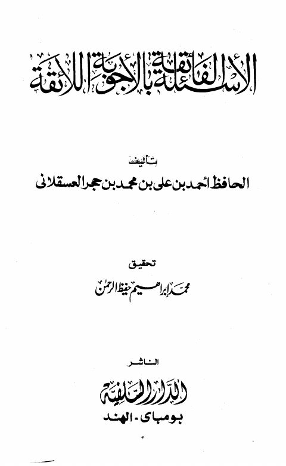
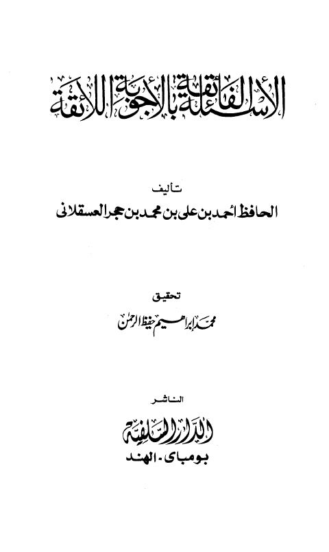

Publishers
الدار السلفية
Publisher
Resources

الأسئلة الفائقة بالأجوبة اللائقة
الأسئلة الفائقة بالأجوبة اللائقة
أحمد بن علي بن حجر العسقلاني

الأسئلة الفائقة بالأجوبة اللائقة
الأسئلة الفائقة بالأجوبة اللائقة
أحمد بن علي بن حجر العسقلاني